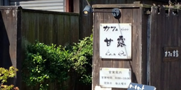

KS高松
- 受付方法
- バス停
- 運行会社
- 琴平バス（株）
備考
JR｢高松駅｣より車で約10分。
瀬戸大橋通り(浜街道)を東に進む。詰田川手前の｢讃州倉庫(株)本社｣の角を左折し、右手に見える2つ目の｢ボイスビル｣北側にあるバス停。
｢高松中央IC｣より車で約15分。
高松中央ICから｢(神戸行)ジャンボフェリー高松のりば｣を目指して、北へ向かい、瀬戸大橋通り(浜街道)を超えて右手に見える2つ目の｢ボイスビル｣北側にあるバス停。
コトバスステーション高松は、広い駐車スペースがあります。 ゆったりと駐車していただくことができます。
- 料金
- コトバスエクスプレスご利用の方は、無料で駐車していただけます。
※ 多客期は満車の場合もございます。ご注意下さい。

コトバスステーション高松から朝に立ち寄れる場所
-
 カフェギャラリー甘露
女性オーナーならではのアットHomeなカフェ。
所在地：香川県高松市福岡町３丁目３−１５ 久保池ビル
営業時間：8:00～18:00
電話：087-822-0930
定休日：土曜日 -

イオン高松東店
イオン高松東店は、イオンリテールが運営するショッピングセンター。映画館もあります。毎週水曜日は「サンクスデー」で、全作品1,100yen均一です。
所在地：香川県高松市福岡町３丁目８−５
営業時間：9:00～22：00
電話：087-826-4111 -

快活ＣＬＵＢ 高松福岡町店
快全国No.1の店舗数を誇るコミック＆インターネットカフェです。24時間営業ですので、いつでも好きな時間に利用できます。駐車場あり（無料）
所在地：香川県高松市福岡町３丁目５−２
営業時間：24時間
電話：087-811-0588